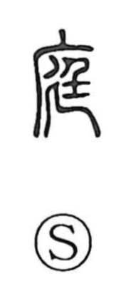

庭

Uncategorized
Kun: niwa, hiroma | On: tei
garden ・ courtyard ・ yard ・ grounds
Explanation
庭 is a phono-semantic character: 廷 serves as the phonetic, indicating the on reading tei, while 广 depicts the roof or eaves of a building. In early use, 廷 named the walled court of the imperial palace where rites were performed; by adding the roof element, 庭 came to mean the (court)yard adjoining a building. From that nucleus the sense broadened to any wide open grounds, as in 庭園 “park” and 校庭 “school grounds.” In modern usage the contrast is often explicit: 庭 typically evokes an open yard without a roof, while 廷 is used for roofed official spaces, as in 法廷 “courtroom.”